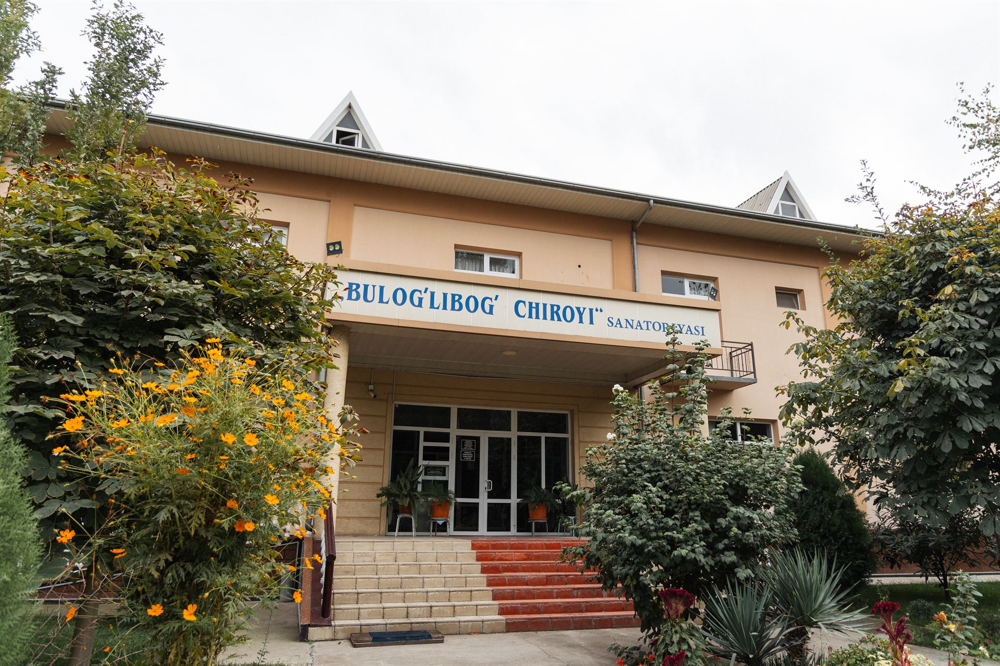
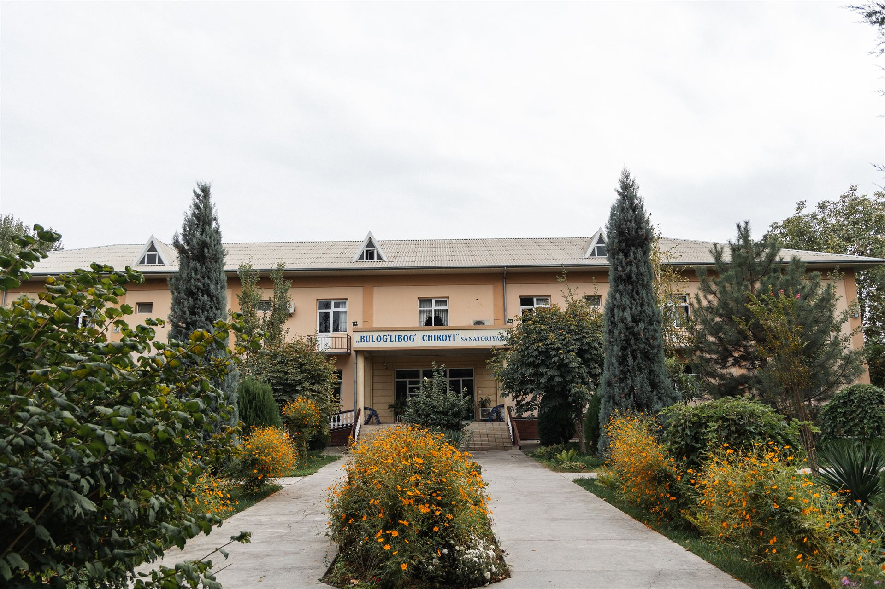
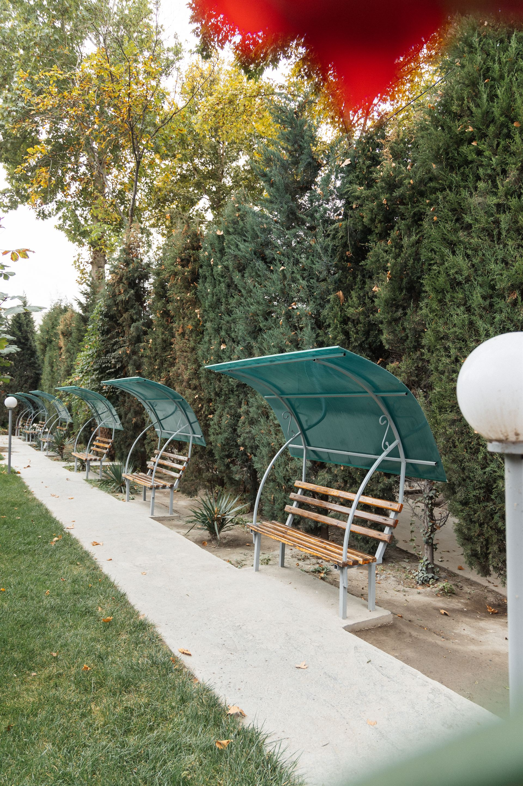
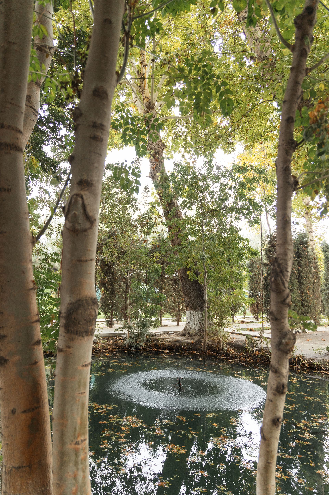
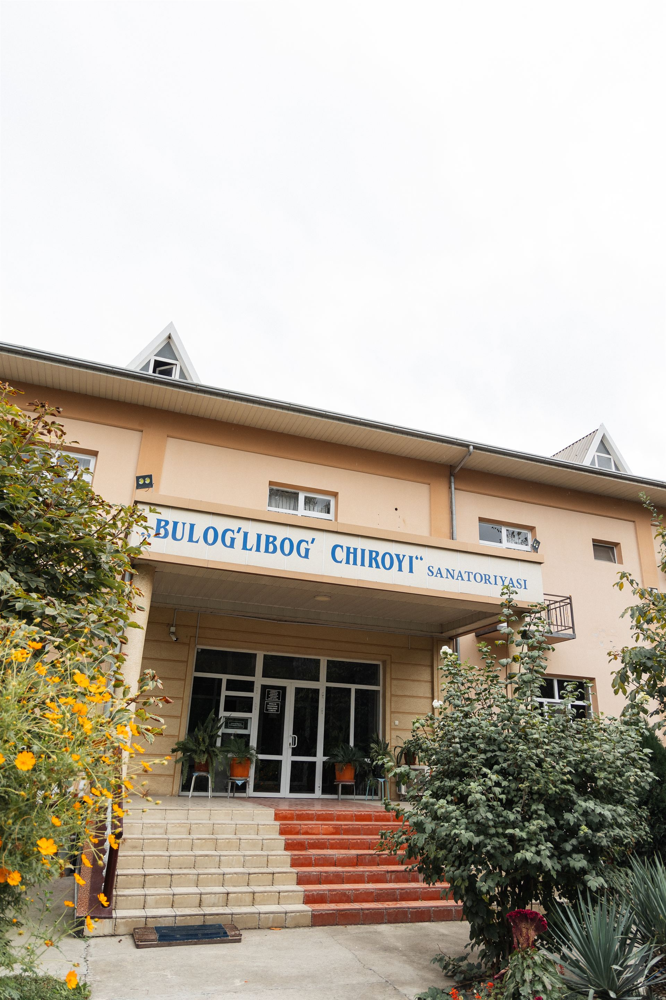

Terapevtik davolash
Terapiya · Kardiologiya
- · Yurak-qon tomir kasalliklari diagnostikasi
- · Ichki organlar bo'yicha maslahat
- · Konservativ davolash
14 dan ortiq tibbiy yo'nalish bitta sanatoriyada. Diagnostikadan laparoskopik operatsiyagacha.

14 dan ortiq tibbiy yo'nalish — bitta sanatoriyada. Statsionar shaklda doimiy tibbiy nazorat ostida davolanish.
Terapiya · Kardiologiya
Nevrologiya · Fizioterapiya
Laparoskopiya · Anesteziologiya
UZI · Klinik laboratoriya
Qodirovlar oilasi — tibbiyot sohasida uzoq yillik tajribaga ega ishonchli mutaxassislar.
Laparoskopik xirurgiya, UZI, klinik laboratoriya — yangi avlod tibbiyot uskunalari.
Qulay xonalar, doimiy tibbiy nazorat, dietik ovqatlanish va parvarish.
Qo'qon shahridagi yashil hudud — shahar shovqinidan uzoq, sokin va salomatlik uchun ideal.
50 o'rinli statsionar — doimiy tibbiy nazorat ostida to'liq davolanish.
O'zR Sog'liqni saqlash vazirligi tomonidan rasmiy ravishda ro'yxatga olingan.
Qodirovlar oilasi — Farg'ona vodiysida tibbiyot an'analarini davom ettirayotgan mutaxassislar.
Sanatoriya rahbari
Shifokor
Shifokor
Katta hamshira
Bemorlarimiz uchun qulay sharoit yaratilgan: shifokor doimiy nazorati, tibbiy hamshira parvarishi, dietik ovqatlanish va tinch dam olish muhiti. Davolash kursi davomida sog'lig'ingiz to'liq nazoratda bo'ladi.




Sanatoriyamizdan o'tgan bemorlarning haqiqiy tajribalari.
"Yurak kasalligim bilan keldim. Akram aka va jamoasi juda diqqat bilan davolashdi. 14 kunlik kursdan keyin o'zimni 10 yil yoshroq his qilyapman. Rahmat!"
"Onam uchun fizioterapiya kursini bron qildim. Hamshiralar juda mehribon, xonalar toza, ovqat sifatli. Eng asosiysi — onam endi yana yaxshi yura oladi."
"Laparoskopik operatsiyani shu yerda o'tkazdim. Kichik kesma, og'riq deyarli sezilmadi, 3 kunda uyga qaytdim. Aziz aka — chinakam mutaxassis."
* Bemorlar fikri haqiqiy tajribalar asosida tayyorlangan. Maxfiylik uchun ismlar qisqartirilgan.
Saytdagi formani to'ldiring yoki to'g'ridan-to'g'ri qo'ng'iroq qiling: +998 77 324 00 03. Mutaxassisimiz siz bilan bog'lanib, sizga mos kursni tanlashda yordam beradi.
Davolash muddati kasallikning turi va og'irligiga qarab belgilanadi. Standart kurs odatda 7-14 kunni tashkil etadi. Aniq muddat shifokor ko'rigidan keyin belgilanadi.
Pasport (yoki ID-karta) va mavjud bo'lsa — oldingi tahlillar, EKG, UZI natijalari. Boshqa hujjatlar kerak bo'lsa, qabul vaqtida xabar beriladi.
Statsionar — sanatoriyamizda qolib, 24 soat doimiy tibbiy nazorat ostida davolanasiz. Muolajalar kursi shifokor tomonidan individual belgilanadi.
Naqd, plastik karta yoki bank o'tkazmasi orqali to'lashingiz mumkin. Aniq narxlar muolaja turiga qarab belgilanadi — qo'ng'iroq qilib batafsil ma'lumot olishingiz mumkin.
Ha, biz reabilitatsiya bo'yicha alohida dasturlarga egamiz. Fizioterapiya, nevrolog kuzatuvi, ovqatlanish rejimi va parvarish — barchasi bir joyda tashkil etilgan.
Qo'qon shahrida joylashgan, qulay yo'l bilan bog'langan.
Mutaxassisimiz siz bilan bog'lanib, mos keladigan davolash kursini tanlashda yordam beradi. Aniq narxlar va shartlar — qo'ng'iroq qilib bilib oling.